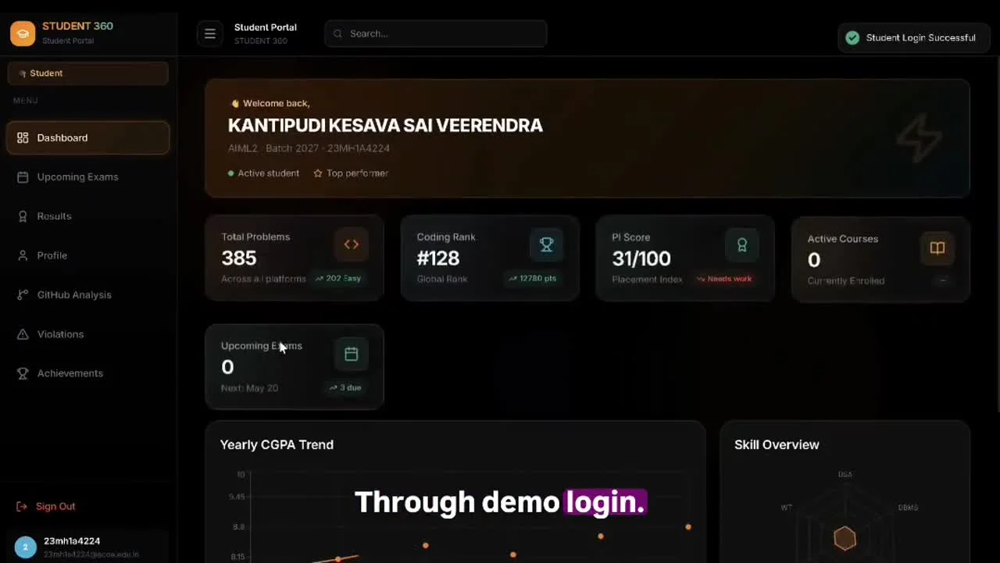
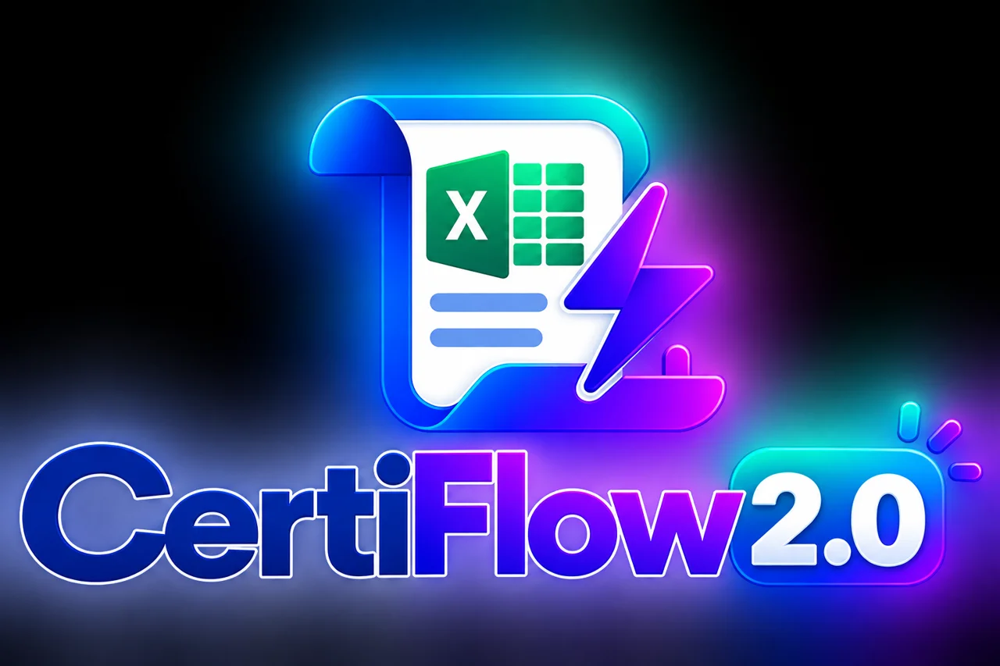
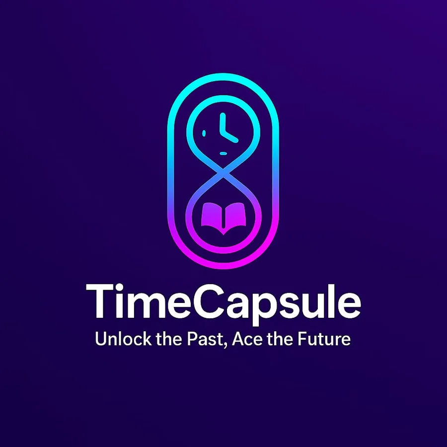
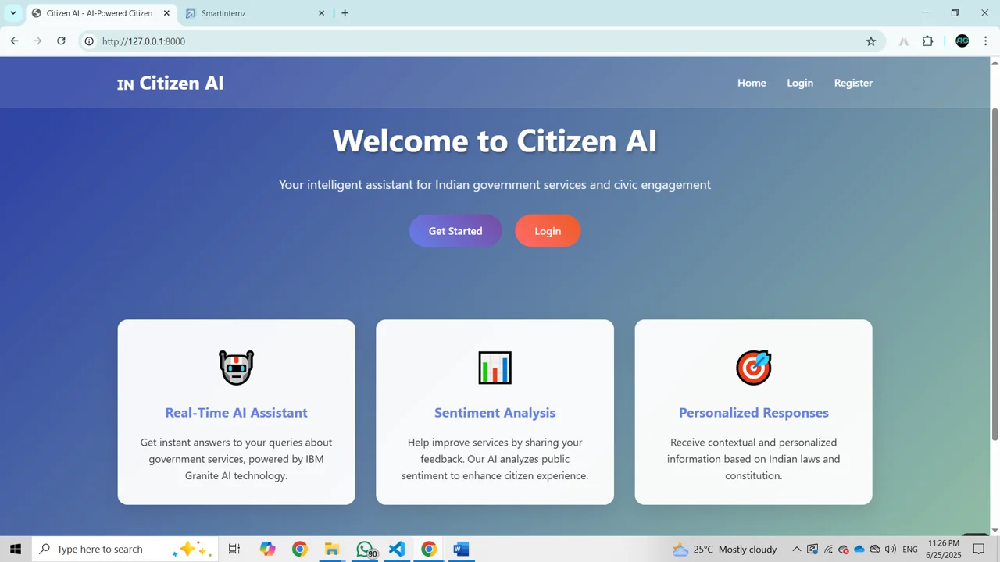
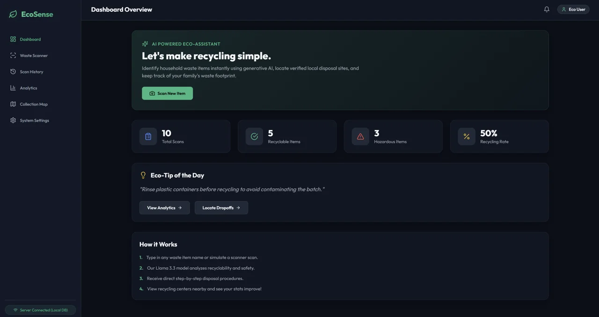

Ideas meet people
Presented Student 360 at Project Street, explained the workflow, and began an immersive week with the team.
S S LOKESH KODAMANCHILI · FINAL-YEAR CSE (AI & ML)
EAST GODAVARI, ANDHRA PRADESH, INDIA
I’m S S Lokesh Kodamanchili, a final-year CSE Artificial Intelligence & Machine Learning student who enjoys turning ideas into working solutions.
My focus spans data analytics, workflow automation, and AI applications. Through Technical Hub training, internships, and collaborative projects, I’ve worked with Python, SQL, Power BI, Microsoft 365, cloud platforms, and web technologies.
From automating certificate delivery to building student intelligence workflows, I learn by making things people can use. I’m looking for an entry-level opportunity to contribute, collaborate, and keep growing.
FEATURED MILESTONE / 06–12 MAY 2026
Seven days of building, collaboration, and learning at Aditya University. With Team 8, I worked on Student 360° and experienced the journey from an idea to a main-stage presentation.
Our team was selected among 20 of 160 teams to present on the main stage in front of trainees and mentors. We were not among the final 13 winning teams; the presentation opportunity itself was a proud milestone.
My role: Workflow Automation Developer, focusing on process automation and integrations between applications and services.
Team: Kesava Kantipudi (team lead), Abhinav Yelamanchili, Sudeep Korada, Matseti Kedhara Sri Ramakrishna, Rakesh V, and myself.
Mentorship: Jakke Harshavardhini and Nagendra Kishore Girajala, with support from Anala Abhilash and Sampath Rayi. Organized by Technical Hub, led by Babji Neelam, and hosted at Aditya University.
Presented Student 360 at Project Street, explained the workflow, and began an immersive week with the team.
Turned ideas into implementation, exchanged feedback with other teams, and learned from industry sessions.
Worked through technical challenges and discussed scalability and implementation with mentors.
Continued development while exploring AI, engineering practices, and projects across other domains.
Demonstrated mentor Nagendra Kishore Girajala’s Match Card project to visitors at Build Space.
Focused on module integration, feature refinement, issue fixing, and presentation preparation.
Completed final refinements and presented Student 360 as one of 20 selected teams.
Select a photo to view it in full.
Presentation video ↗Hands-on project implementation and workflow integration during the internship scheduled from 4 May to 26 June 2026. Project Space 8.0 formed a key part of this journey.
Worked with Excel analysis, pivot tables and charts, SharePoint sites and lists, and Power Automate workflows. Built CertiFlow’s workflow and integrations.
Developed Citizen AI with a team, exploring civic assistance, citizen feedback, and AI-powered insights using IBM technologies.
Progressed through Ignite Coder, Trainee, Bamboo Coder, Become Coder, and Drive Ready 7.0. Built foundations in programming, web development, cloud, data, and automation.
Completed two months of DCA training, covering Microsoft Office, Word, Excel, and practical computer applications.
Exploring ideas and building applications with AI coding tools.

01Academic intelligence + secure assessment
An integrated student platform combining academic dashboards, exam results, coding activity, achievements, and a desktop examination client.
Workflow Automation Developer: contributed to process workflows and integration across applications and services. The final repository uses React/Vite, Firebase/Firestore, and an Electron client.

02Microsoft 365 certificate automation
Two versions automate individual registration and bulk Excel participant processing, with participation checks, personalized HTML certificates, and email delivery.
Built the Power Automate workflows and integrations for processing, certificate generation, storage, email delivery, and tracking.

03Unlock the past. Ace the future.
An academic resource-sharing project connecting senior uploads, approval workflows, and controlled junior access with notifications and activity logs.
Implemented the junior access workflow as part of iSHIP Team 37. Collaborated on integration, testing, and presentation.

04Intelligent citizen engagement
A civic engagement prototype bringing conversational assistance, feedback classification, and sentiment summaries into one workspace.
Team project developed during the SmartBridge Generative AI internship. Earlier learning versions used Flask/Gradio; the current repository documents FastAPI and IBM watsonx.

05AI-powered waste guidance
Classifies waste items, explains disposal steps, maps dropoff locations, and visualizes scan history with an offline fallback.
Collaborative project exploring generative AI, REST APIs, interactive maps, and environmental analytics.
Google Cloud iSHIP project for AI learning guidance, quizzes, and interview practice. My role: frontend development and database management.
Interactive employee dashboard with DAX measures, bookmarks, button navigation, and a dedicated slicer panel.
Search, genre filters, multi-screen navigation, movie details, and record editing using Patch operations.
Call analysis using pivot tables, slicers, conditional formatting, and dynamic charts.
A preparation dashboard with a study roadmap, syllabus, resources, and browser-saved tracking.
Explore ↗Student study-resource feedback with ratings, community reviews, and visual analytics.
Explore ↗A learning journey across data, cloud, automation, and emerging technologies.
May 2026 · Expires May 2027
Credential: E74E99646B1D7B89May 2026 · Expires May 2027
Credential: E477DF6D7DB6256Jan 2026 · Expires Jan 2028
Credential: S130851-260108-SOLView credential ↗12 Jun 2025 · Expires 12 Jun 2028
Credential: 914b77fc387d4b0ba7f7394eebffd4c4View credential ↗Sep 2025
Credential: kmyX5izgView credential ↗May 2025
View credential ↗2025
View credential ↗2025
View credential ↗Jul–Oct 2025
Feb 2026 · Four-week program
Credential: 985AC783Introduction to Agent Skills · Claude with the Anthropic API · Introduction to Model Context Protocol · Claude Code in Action.
AWS Academy Cloud Foundations and Machine Learning Foundations; Cisco Python Essentials 1 and Programming Essentials in C; Oracle Academy Java courses; Red Hat Introduction to Python Programming (AD141); HTML certification; Startup Business Management Programme.
Practising problem solving and building consistency, one challenge at a time.
HackerRank SQL Basic & Intermediate certifications and coding practice across multiple platforms. Visit the profiles for current statistics.
CREATIVE EXPLORATIONS / IN MY FREE TIME
In my free time, I explore editing and content creation alongside my academic and technical journey.
I enjoy basic video editing with CapCut on PC and mobile, Adobe Premiere Pro, and DaVinci Resolve, while exploring new editing tools and techniques.
Learning through cuts, color, rhythm, and experimentation.
I create and share funny videos and edited content on Instagram and YouTube, experimenting with storytelling, timing, and creative ideas.
EXPECTED GRADUATION / 2027
Artificial Intelligence & Machine Learning
Aditya College of Engineering & Technology
Surampalem, Andhra Pradesh
OPEN TO THE NEXT OPPORTUNITY
Have an entry-level opportunity, a project idea, or something to share? I’d love to hear from you.
satyalokesh.ks@gmail.com